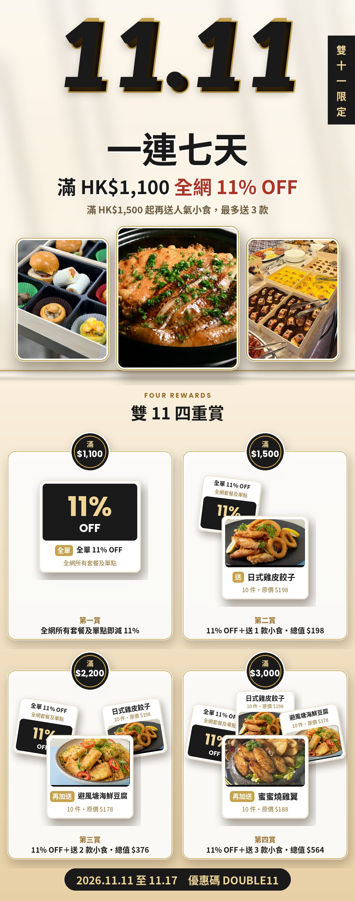
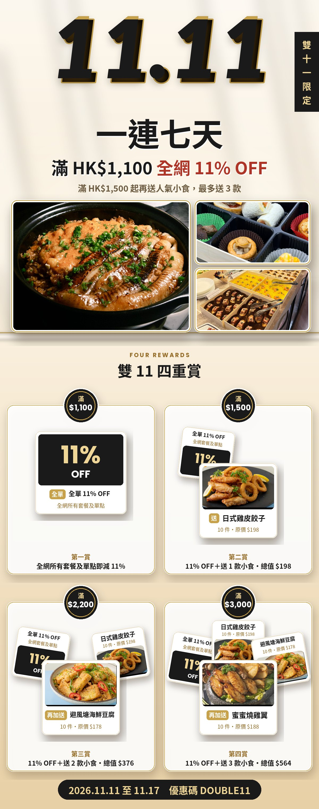
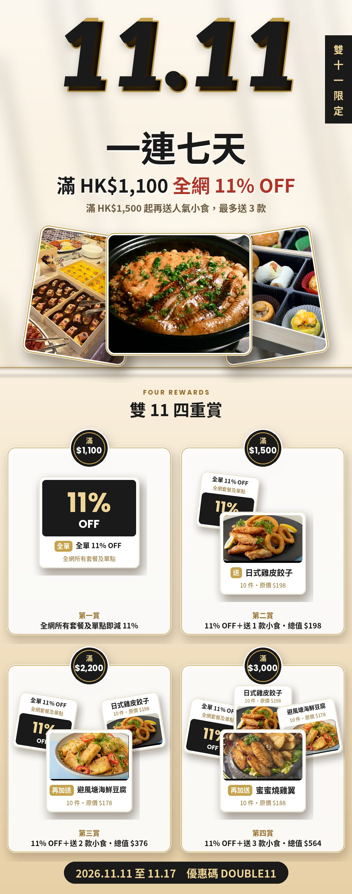

三張主圖：煲仔飯、精緻餐盒、自助餐擺枱（新加）。其他內容不變，只改主圖排法。設計參考 Four Seasons Sydney 的留白及層次。
三張直身相並排，中間煲仔飯最大最高，兩邊餐盒及自助餐對稱。整齊、平衡，最似 Four Seasons 的 tile 排法。

左邊煲仔飯大圖，右邊餐盒及自助餐上下兩格，全部直角對齊、不打斜。最雜誌感、最高級，亦最清楚展示三款場景。

兩邊相片打斜放後，中間煲仔飯放最前，似一疊相片攤開。最有層次及節日感，但兩邊相片只見大半。
